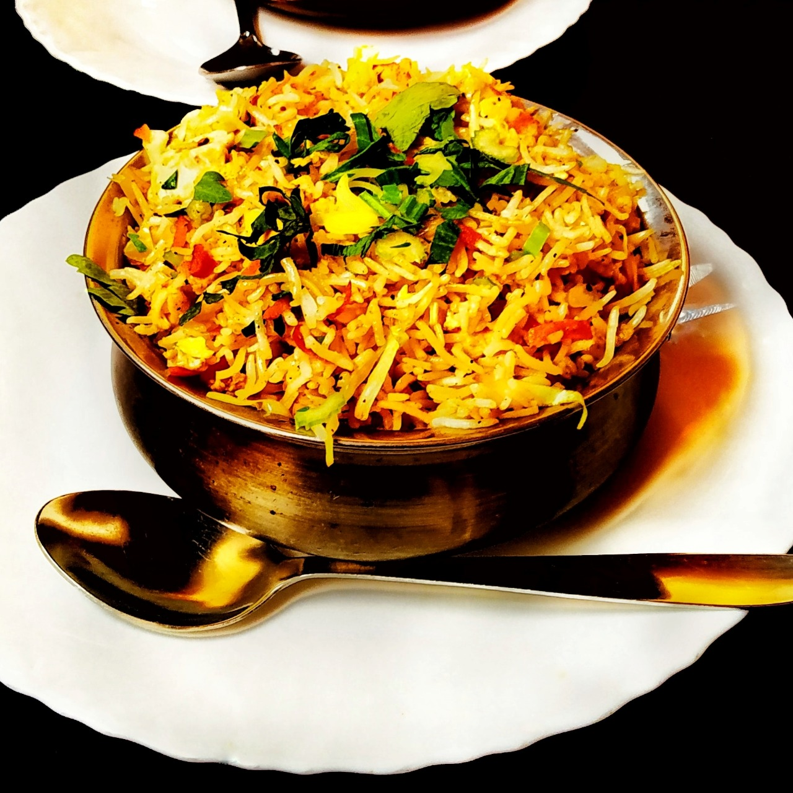

Veg. Biryani

Description
Biryani is one of the most popular dishes in South Asia, as well as among the diaspora from the region. It has gained popularity in South India
Ingredients
- Curd
- Ginger Garlic Paste
- Biryani Masala
- Salt
- Tumeric
- Red chilli powder
Steps
- Soak the basmati rice for 30-45 minutes before cooking it in a pressure cooker.
- Alternatively, you can also add almost cooked basmati rice and layer it on top gravy and simmer in pressure cooker for 10 minutes.
- Lastly, you can also marinate the veggies for 30 minutes in curd / yogurt with dry spices powder